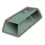
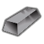
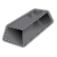
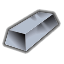

代钢级·电力工业·AR500耐磨钢 SteelBar
代钢级家具建筑651防具142穿戴件40近战工具96远程武器7其它8共944件 价值15 质量0.35 护甲1.30/1.30/0.10 利钝1.28/1.20
Core_SK · def自带→电力工业(前期) · Things/Item/Ingot

代钢级·电力工业·不锈钢 FerrosiliconAlloy
代钢级家具建筑651防具142穿戴件40近战工具96远程武器7其它8共944件 价值4 质量0.35 护甲1/0.80/0.11 利钝1.13/1.24
Core_SK · def自带→电力工业(前期) · Things/Item/Ingot

代钢级·电力工业·黄铜 CupronickelAlloy
代钢级家具建筑651防具142穿戴件40近战工具96远程武器7其它8共944件 价值10 质量0.40 护甲1.10/0.80/0.04 利钝0.80/1.50
Core_SK · def自带→电力工业(前期) · Things/Item/Ingot

代钢级·电力工业·低碳钢 Steel
代钢级家具建筑648防具142穿戴件40近战工具96远程武器7其它8共941件 价值2 质量0.35 护甲0.90/0.80/0.10 利钝1/1.20
游戏本体 Core · def自带→电力工业(前期) · Things/Item/Ingot

代钢级·电力工业·中碳钢 CarbonSteel
代钢级家具建筑647防具142穿戴件40近战工具96远程武器7其它8共940件 价值7 质量0.35 护甲1.15/1/0.10 利钝1.35/1.20
Vile's Materials Science · def自带→电力工业(前期) · Things/Item/Ingot
代钢级·电力工业·工具钢 AlnicoAlloy
代钢级家具建筑647防具142穿戴件40近战工具96远程武器7其它8共940件 价值22 质量0.35 护甲1.15/1.15/0.10 利钝1.30/1.30
Core_SK · def自带→电力工业(前期) · Things/Item/Ingot

代钢级·电力工业·弹簧钢 SpringSteel
代钢级家具建筑647防具142穿戴件40近战工具96远程武器7其它8共940件 价值22 质量0.35 护甲1.05/1.25/0.10 利钝1.50/1.20
Vile's Materials Science · def自带→电力工业(前期) · Things/Item/Ingot
代钢级·电力工业·3003铝合金 AnodizedAluminiumRed
代钢级家具建筑519防具140穿戴件37近战工具91远程武器7其它8共802件 价值5 质量0.25 护甲0.90/1/0.06 利钝1/0.80
Vile's Materials Science · def自带→电力工业(前期) · Things/Item/Ingot
代钢级·电力工业·6061铝合金 AnodizedAluminiumBlue
代钢级家具建筑519防具140穿戴件37近战工具91远程武器7其它8共802件 价值7 质量0.25 护甲0.90/1/0.08 利钝1/0.80
Vile's Materials Science · def自带→电力工业(前期) · Things/Item/Ingot